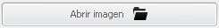
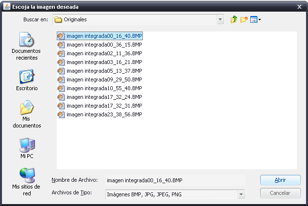

XRayDetector permite abrir una imagen para llevar a cabo un análisis sobre la misma, y determinar si hay algún defecto sobre la misma.
El ripo de imágenes utilizadas son radiografías en escala de grises. En este documento se incluye la ayuda acerca de esta funcionalidad.
Para cargar una imagen en la aplicación haga click en el botón , a continuacíon XRayDetector le pedirá que seleccione una imagen de su ordenador para ser cargada en la aplicación.
Se abrirá un cuadro de diálogo en el que puede navegar por su sistema, pudiendo así elegir el archivo que considere necesario. Las extensiones válidas soportadas por la aplicación son: BMP, JPG, JPEG y PNG:

Una vez seleccionada la imagen deseada, pulse el botón ACEPTAR.
Una vez cargada la imagen en la aplicación, ésta se mostrará en el panel VISOR.